용접기사 (2017-03-05 기출문제)
1과목: 기계제작법
1. 대형제품이나 무거운 제품에 구멍가공을 하기 위해 가공물을 고정시키고 드릴이 가공 위치로 이동할 수 있도록 제작된 드릴링 머신은?
- 다두 드릴링 머신
- 다축 드릴링 머신
- 탁상 드릴링 머신
- 레이디얼 드릴링 머신
(정답률: 56%)

2. 고압가스 층전용기의 보관 시 유의할 점 중 틀린 것은?
- 전락하지 않도록 할 것
- 충격을 방지하도록 할 것
- 통풍이 안 되는 곳에 보관할 것
- 병 주변에 화기를 가까이 하지 말 것
(정답률: 85%)
3. 주철과 같은 취성 재료(매진 재료)를 저속으로 절삭할 때 생기는 칩의 형태는?
- 균열형 칩
- 유동헝 칩
- 열단헝 침
- 전단헝 칩
(정답률: 43%)
4. 표면경화 열처리 중 침탄법에 사용되는 침탄제의 종류가 아닌 것은?
- 가스 침탄제
- 고체 침탄제
- 액체 침탄제
- 고주파 침탄제
(정답률: 69%)
5. 구성인선(Built-up Edge)의 방지책 중 틀린 것은?
- 윤활유를 공급한다.
- 절삭속도를 느리게 한다.
- 공구인선을 예리하게 한다.
- 바이트의 경사각을 크게 한다.
(정답률: 69%)
6. 유동형(flow type) 칩이 발성되는 조건 이 아닌 것은?
- 절삭속도가 빠를 때
- 절삭 깊이가 적을 때
- 연성의 재료를 가공할 때
- 공구의 윗명 경사각이 작을 때
(정답률: 56%)
7. TTT선도에서 Mf점과 Ms점 사이(100-200℃정도)에서 담금질을 하여 항온변태를 행하는 방법은?
- 마퀜칭 (marquenching)
- 마템퍼링 (martempering)
- 오스템퍼링 (austempering)
- 계단 담금질 (interrupted quenching)
(정답률: 45%)
8. 다음 중 마이크로미터 측정면의 평면도 검사에 가장 적함한 측정기는?
- V 블록
- 옵티컬 플랫
- 옵티컬 파라렐
- 하이트 게이지
(정답률: 72%)
9. 전해연마의 특징에 대한 설명 중 틀린 것은?
- 가공 면에 방향성이 없다
- 복잡한 형상도 연마가 가능하다
- 탄소량이 많은 강일수록 연마가 용이하다
- 가공변질 층이 나타나지 않으므로 펑활한 면을 얻을 수 있다
(정답률: 66%)
10. 주물사로 사용되는 모래에 수지, 시멘트, 석고등의 점결제를 사용하며, 경화시간을 단축하기 위하여 경화촉진제를 사용하여 조형하는 주형법은?
- 원심 주형법
- 셀몰드 주형법
- 자경성 주형법
- 인베스트먼트 주형법
(정답률: 28%)
11. 잇수가 120인 스퍼기어를 밀링에서 단식 분할방법으로 가공하고자 할 때 분할대(index head)의 크랭크 회전수로 옳은 것은? (단, 분할대의 웜 기어 비는 40:1 이다.)
- 18 구멍짜리 분할판에서 6 구멍씩
- 18 구멍짜리 분할판에서 9 구멍씩
- 24 구멍짜리 분할판에서 6 구멍씩
- 24 구멍짜리 분할판에서 9 구멍씩
(정답률: 37%)
12. 프레스를 이용한 단조에서 램 유효 단면적이 150cm2 실린더 내의 압력이 20kg/mm2, 기계효율을 80%로 하면 프레스의 용량(ton)은?
- 30
- 300
- 37.5
- 375
(정답률: 25%)
13. 용접 결함에 있어서 언더컷(under cut) 발생하는 원인으로 가징 거리가 먼 것은?
- 전류가 너무 낮을 때
- 아크 길이가 너무 길 때
- 용접속도가 적당하지 않을 때
- 부적당한 용접봉을 사용했을 때
(정답률: 72%)
14. 액체 호닝의 설명으로 옳은 것은?
- 숫돌을 진동시키면서 가공물을 완성 가공하는 방법
- 혼(hone)에 회전 및 직선왕복 운동을 주어 가공하는 방법
- 랩과 일감 사이에 랩제를 넣어 서로 누르고 비비면서 다듬는 방법
- 물(가공액)과 혼합된 연삭입자를 압축공기로 고속 분사시켜 매끈하게 다듬질하는 방법
(정답률: 52%)
15. 기어의 잇면 또는 전단 가공된 제품을 정확한 치수로 다듬질하거나 전단면을 깨끗하게 가공하기 위하여 시행하는 미소량의 전단 가공은?
- 노칭
- 브로칭
- 셰이빙
- 트리밍
(정답률: 65%)
16. 다음 공작기계 중 급속귀환 운동을 하는 기계는?
- 밀링
- 선반
- 셰이퍼
- 드릴링머신
(정답률: 50%)
17. 머시닝센터에 사용되는 준비기능(G-code) 중 공구 지름 보정기능과 무관한 것은?
- G40
- G41
- G42
- G43
(정답률: 31%)
18. 숏 피닝(shot peening)에 대한 설명으로 틀린 것은?
- 숏 피닝 작업은 각종 스프링 재료에 널리 사용된다
- 두께가 큰 재료에 효과가 크며, 부적당한 숏 피닝은 연성을 증가 시킨다
- 숏의 재짙은 냉간 주철, 주강, 강철 등이 쓰이며 대부분 환형으로 되어 있다
- 가공물의 표면에 숏을 투사하여 피로강도를 증가시키기 위한 일종의 냉간 가공법이다
(정답률: 50%)
19. 지그(jig)작업 시 공작물의 위치결정 방법 중 한 공작물이 일직선상에서 적어도 2개의 반대방향 운동을 억제하는 경우, 둘 또는 그 이상의 표면 사이에서 억제되며 위치 결정 하는 방법은?
- 네스팅(nesting)
- 이젝팅(ejecting)
- 센터링(centering)
- 풀 프루핑(fool proofing)
(정답률: 35%)
20. 모래와 수지 점결제를 배합한 레진 코티드 샌드를 가열한 금형 위에 덮어 경화시켜 만든 주형으로 소형 자동차용 크랭크 축, 캠축 등을 대량으로 주조하는 데 가장 적당한 주조법은?
- 쇼 주조법(shaw process)
- 쉘 주형 법(shell molding process)
- 저압 주조법 (low pressure casting)
- 인베스트먼트 주조법(investment casting)
(정답률: 59%)
2과목: 재료역학
21. 그림과 같이 원형 단면의 원에 접하는 x-x축에 관한 단면 2차모멘트는?
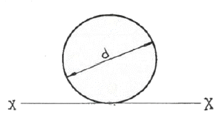
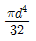
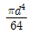
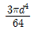
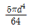
(정답률: 38%)
22. 다음 중 좌굴(bukling) 현상에 대한 설명으로 가장 알맞은 것은?
- 보에 휨하중이 작용할 때 굽어지는 현상
- 트러스의 부재에 전단하중이 작용할 때 굽어지는 현상
- 단주에 축방향의 인장하중을 받을 때 기둥이 굽어지는 현상
- 장주에 축방향의 압축하중을 받을 때 기둥이 굽어지는 현상
(정답률: 50%)
23. 동일한 길이와 재질로 만들어진 두 개의 원형단면 축이 있다. 각각의 지름이 d1, d2 일 때 각 축에 저장되는 변형에너지 y1,y2의 비는?(단, 두 축은 모두 비틀림 모멘트 T를 받고 있다.)
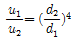
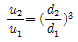
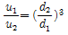
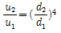
(정답률: 31%)
24. 단면 2차모멘트가 251cm4인 I형강 보가 있다. 이 단면의 높이가 20cm라면, 굽힘 모멘트 M=2510 N·m을 받을 때 최대 굽힘 응력은 몇 MPa인가?
- 100
- 50
- 20
- 5
(정답률: 35%)
25. 그림과 같이 등분포하중이 작용하는 보에서 최대 전단력의 크기는 몇 kN인가?
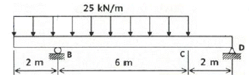
- 50
- 100
- 150
- 200
(정답률: 30%)
26. 직경 20mm인 와이어 로프에 매달린 1000N의 중량물(W)이 낙하하고 있을 때, A점에서 갑자기 정지시키면 와이어 로프에 생기는 최대 응력은 약 몇 GPa인가? (단, 와이어 로프의 탄성계수 E=20GPa 이다.)
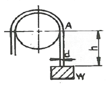
- 0.93
- 1.13
- 1.72
- 1.93
(정답률: 28%)
27. 그림과 같은 하중을 받고 있는 수직 봉의 자중을 고려한 총 신장량은? (단, 하중=P, 막대 단면적=A, 비중량=, 탄성계수=E이다.)
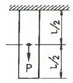
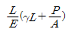
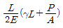
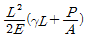
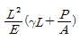
(정답률: 35%)
28. 전단 탄성계수가 80GPa인 강봉(steel bar)에 전단응력이 1kPa로 발생했다면 이 부재에 발생한 전단변형률은?
- 12.5X10-3
- 12.5X10-6
- 12.5X10-9
- 12.5X10-12
(정답률: 43%)
29. 그림과 같은 구조물에서 AB부재에 미치는 힘은 몇 kN인가?
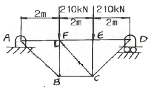
- 450
- 350
- 250
- 150
(정답률: 35%)
30. 두께 10mm인 강판을 사용하여 직경 2.5m의 원통형 압력용기를 제작하였다. 용기에 작용하는 최대 내부 압력이 1200kPa일 때 원주응력(후프 응력)은 몇 MPa인가?
- 50
- 100
- 150
- 200
(정답률: 35%)
31. 열응력에 대한 다음 설명 중 틀린 것은?
- 재료의 선팽창 계수와 관계있다.
- 세로 탄성계수와 관계있다.
- 재료의 비중과 관계있다.
- 온도차와 관계있다.
(정답률: 46%)
32. 다음 그림과 같은 외팔보에 하중 P1,P2가 작용될 때 최대 굽힘 모멘트의 크기는?
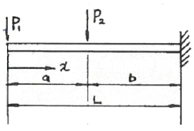
- P1 • a + P2 • b
- P1 • b + P2 • a
- (P1 + P2) • L
- P1 • L + P2 • b
(정답률: 37%)
33. 그림과 같은 단순보에서 보 중앙의 처짐으로 옳은 것은? (단, 보의 굽힘 강성 EI는 일정하고, M0는 모멘트, l은 보의 길이이다.)
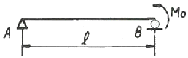
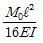
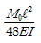
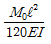
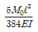
(정답률: 27%)
34. 직경 20mm인 구리합금 봉에 39kN의 축 방향 인장하중이 작용할 때 체적 변형률은 대략 얼마인가? (단, 탄성계수 E-100GPa, 포와송비 μ=0.3)
- 0.38
- 0.038
- 0.0038
- 0.00038
(정답률: 22%)
35. 길이가 L이고 원형 단면의 직경이 d인 외팔보의 자유단에 하중 P가 가해진다면, 이 외팔보의 전체 탄성에너지는? (단, 재료의 탄성계수는 E이다.)
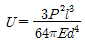
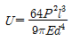
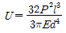
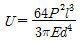
(정답률: 17%)
36. 다음 그림과 같은 양단 고정보 AB에 집중하중 P=14kN이 작용할 때 B점의 반력 RB[kN]는?
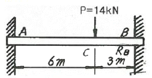
- RB=8.06
- RB=9.25
- RB=10.37
- RB=11.08
(정답률: 35%)
37. 다음과 같은 평면응력상태에서 X축응로부터 반시계방향으로 30°회전 된 X'축 상의 수직응력(σx')은 약 몇 MPa인가?
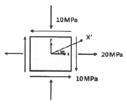
- σx'=3.84
- σx'=9.25
- σx'=17.99
- σx'=-17.99
(정답률: 24%)
38. 중공 원형 축에 비틀림 모네트 T=100Nm가 작용할 때, 안지름이 20mm, 바깥지름이 25mm라면 최대 전단응력은 약 몇 MPa인가?
- 42.2
- 55.2
- 77.2
- 91.2
(정답률: 28%)
39. 그림과 같이 하중 P가 작용할 때 스프링의 변위 δ는? (단, 스프링 상수는 k이다.)
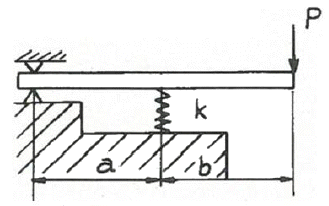
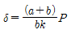
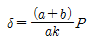
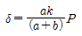
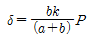
(정답률: 38%)
40. 단순지지보의 중앙에 집중하중(P)dl 작용한다. 점 C에서의 기울기를
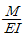
선도를 이용하여 구하면? (단, E=재료의 종탄성계수, I=단면 2차 모멘트)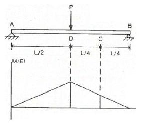
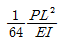
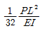
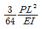
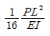
(정답률: 39%)
3과목: 용접야금
41. Y합금의 일종으로 Ti과 Cu를 0.2%정도씩 첨가한 것으로 피스톤에 사용하는 알루미늄 합금은?
- 실루민
- 라우탈
- 코비탈륨
- 하이드로날륨
(정답률: 28%)
42. 다음 중 상온에서 강자성체이며 조직이 매우 연하며, 체심입방격자의 구조를 가지는 것은?
- 페라이트
- 필라이트
- 시멘타이트
- 오스테나이트
(정답률: 46%)
43. Fe-C 상태도에서 나타나는 오스테나이트 조직의 결정구조로 옳은 것은?
- SC
- BCC
- FCC
- HCP
(정답률: 62%)
44. 일반적인 주괴의 단면조직에서 나타나지 않는 조직은?
- 질층
- 탈탄층
- 주상정
- 등축정
(정답률: 53%)
45. 다음 중 표면경화 열처리법이 아닌 것은?
- 침탄법
- 질화법
- 화염경화법
- 심냉처리법
(정답률: 65%)
46. 금속의 소성변형에 의하여 전위밀도가 증가하여 전위 상호간의 작용에 의한 결정격자의 뒤엉킴으로 전위를 전진시키지 못하여 금속이 단단해지는 것을 무엇이라고 하는가?
- 가공강화
- 분산강화
- 석출강화
- 고용강화
(정답률: 56%)
47. 일반적으로 강의 항온변태곡선인 C곡선의 nose부 이상의 온도에서 생성되는 조직은?
- 펄라이트
- 소르바이트
- 베이나이트
- 마텐자이트
(정답률: 28%)
48. 400℃ 이상에서 탄화물의 입계석출로 인하여 입계부식을 일으키는 스테인리스강은?
- 펄라이트계 스테인리스강
- 페라이트계 스테인리스강
- 마텐자이트계 스테인리스강
- 오스테나이트계 스테인리스강
(정답률: 54%)
49. 주철제품을 고온예열 용접한 후 잔류응력을 제거하기 위한 열처리 방법은?
- 퀜칭
- 어날링
- 템퍼링
- 마템퍼링
(정답률: 49%)
50. 일반적인 비금속 개재물이 강에 미치는 영향으로 틀린 것은?
- 메짐의 원인이 된다.
- 재료의 인성을 저하시킨다.
- 개재물로 인하여 열처리 시 균열생성을 억제한다.
- 산화철이나 등은 단조나 압연 작업 중에 균열을 일으키기 쉽다.
(정답률: 56%)
51. 구리의 물리적 성질에 대한 내용으로 가장 거리가 먼 것은?
- 원자량은 63.5이다.
- 결정구조는 BCC이다.
- 밀도는 약 8.9
- 끓는점은 약 2959℃ 정도이다.
(정답률: 52%)
52. 탄소강 중에 함유된 인(P)의 영향으로 가장 거리가 먼 것은?
- 인장강도가 증가한다.
- 연소율을 증가시킨다.
- 상온취성의 원인이 된다.
- 결정입자를 조대화 시킨다.
(정답률: 37%)
53. 저수소계 용접봉의 건조 방법으로 가장 적당한 것은?
- 70~100℃에서 30분간 건조
- 300~350℃에서 30분간 건조
- 10~100℃에서 1~2시간 건조
- 300~350℃에서 1~2시간 건조
(정답률: 69%)
54. 라미네이션 균열에 관한 내용으로 틀린 것은?
- 강판의 두께 방향의 강도를 감소시키는 원인이 된다.
- 용접 이음 내부에 매몰된 균열로 존재하며, 초음파 탐상으로 탐지할 수 있다.
- 구조물 내부에 존재하고 있는 매몰된 균열이 다른 균열의 성장 및 전파에 기여한다.
- 황이 층상으로 존재하는 강을 서브머지드 아크 용접하면 일어나는 고온 균열이다.
(정답률: 40%)
55. 서브머지드 아크 용접에 사용하는 소결형 용제와 용융형 용제에 관한 설명으로 틀린 것은?
- 소결형은 강한 탈산 작용을 한다.
- 용융형은 주로 유리와 같은 광택이 나며, 흡습성이 크다.
- 용융형은 광물성 원료를 고온으로 용융한 후에 분쇄하여 적당한 입도로 만든 것이다.
- 소결형은 분말 원료를 800~1000℃의 고온으로 가열하여 고체화 시킨 분말모양이다.
(정답률: 37%)
56. 피복 아크 용접봉에서 수소함유량이 적어 내균열성이 가장 좋은 용접봉은?
- E4303
- E4311
- E4316
- E4327
(정답률: 57%)
57. 다음 중 가단주철의 종류에 속하지 않는 것은?
- 백심 가단주철
- 흑심 가단주철
- 솔바이트 가단주철
- 필라이트 가단주철
(정답률: 46%)
58. 구속에 의한 응력과 관계되며, 열영향부의 연성부족, 수소량의 과다, 열영향부 조립부의 급랭에 의한 경화 등의 원인으로 발생하는 균열은?
- 고온균열
- 지연균열
- 뜨임균열
- 크레이트 균열
(정답률: 53%)
59. 금속의 응고 시 결정의 형성 과정을 순서대로 나열한 것은?
- 핵 발생 성장 결정 경계 형상
- 핵 발생 결정 경계 형성 성장
- 결정 경계 형성 성장 핵 발생
- 결정 경계 형성 핵 발생 성장
(정답률: 59%)
60. 다음 중 항온 열처리의 종류가 아닌 것은?
- 마퀜칭
- 서브제로
- 마템퍼링
- 오스템퍼링
(정답률: 66%)
4과목: 용접구조설계
61. 잔류 응력의 측정법의 분류 중 정성적 방법에 속하지 않는 것은?
- X선법
- 붓기법
- 자기적 방법
- 경도에 의한 방법
(정답률: 27%)
62. 용접이음을 설계 할 때의 주의 사항으로 옳은 것은?
- 용접이음을 한쪽으로 집중하게 한다.
- 용접선은 될 수 있는 한 교차되게 한다.
- 맞대기 용접은 피하고 필릿 용접을 하도록 한다.
- 용접 작업에 지장을 주지 않도록 공간을 두어야 한다.
(정답률: 66%)
63. 맞대기 용접이음이나 필릿 용접이음의 각변형을 교정하기 위하여 이용되는 가열법은?
- 점 가열법
- 격자 가열법
- 선상 가열법
- 쐐기 모양 가열법
(정답률: 53%)
64. 용접성시험 중 용접 연성 시험에 해당하는 것은?
- 토퍼 시험
- 킨젤 시험
- 슈나트 시험
- 카안 인열 시험
(정답률: 53%)
65. 다음 중 예열의 목적이 아닌 것은?
- 경화 조직의 생성 방지를 위해서
- 용착금속의 연성을 증가시키기 위해서
- 변형 및 잔류응력의 발생을 적게 하기 위해서
- 수소의 방출을 방지하고 냉각속도를 빠르게 하기 위해서
(정답률: 68%)
66. 그림의 T형 측면 필릿 용접 이음에서의 응력을 구하는 식은?
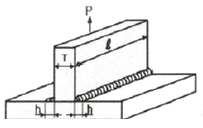
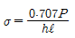
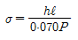
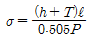
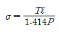
(정답률: 62%)
67. 접합하는 부재 한 쪽에 구멍을 뚫고 판의 표면까지 가득하게 용접하고 다른 쪽 부재와 접합하는 용접은?
- 스킵 용접
- 필릿 용접
- 맞대기 용접
- 플러그 용접
(정답률: 69%)
68. 다음 용접 보조 기호는 무엇을 의미하는가?
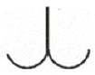
- 서페이싱
- 토우를 매끄럽게 함
- 영구적인 덮개 판을 사용
- 평면(동일평면으로 다듬질)
(정답률: 64%)
69. 브리넬 경도 시험에 사용되는 압입자의 지름으로 틀린 것은?
- 1mm
- 5mm
- 10mm
- 20mm
(정답률: 43%)
70. 다음 맞대기 용접 이음홈의 종류 중 가장 얇은 판을 용접할 때 사용하는 것은?
- I형
- H형
- U형
- X형
(정답률: 74%)
71. 방사선투과사진의 상질을 평가하기 위한 게이지로 사용되는 것은?
- 정류계
- 농도계
- 투과도계
- 스펙드로계
(정답률: 68%)
72. 용접변형의 종류에서 면외 변형의 종류에 속하는 것은?
- 가로수축
- 세로수축
- 좌굴변형
- 회전변형
(정답률: 46%)
73. 용접의 시점과 종점부분의 용접 결함을 방지하기 위해서 동일한 재질이나 형상의 재료를 부착하는 것은?
- 백킹
- 와이어
- 엔드 탭
- 용접지그
(정답률: 75%)
74. 다음 중 용접 잔류응력의 완화 방법이 아닌 것은?
- 과구속 응력법
- 응력 제거 풀림
- 저온 응력 완화법
- 기계적 응력 완화법
(정답률: 65%)
75. 맞대기 이음에서 인장 응력을 구하는 공식은?
- 인장 응력= 판두께×용접선의 길이/인장하중
- 인장 응력 = 인장하중/판두께×용접선의 길이
- 인장 응력 = 판두께/인장하중×용접선의 길이
- 인장 응력 = 용접선의 길이×인장하중/판두께
(정답률: 50%)
76. 용접설계에서 설계자가 알아두어야 할 용접요령으로 틀린 것은?
- 가능한 아래보기 자세로 용접하도록 할 것
- 용접기 및 1차, 2차 케이블의 용량이 충분할 것
- 가능한 낮은 전류를 사용하여 용접하도록 할 것
- 저수소계 용접봉을 이용하여 예열을 줄이거나 생략하도록 할 것
(정답률: 36%)
77. 납땜의 용제가 갖추어야 할 조건이 아닌 것은?
- 산화를 방지할 것
- 부식 작용이 높을 것
- 모재와 친화력이 높을 것
- 불순물을 제거하고 유동성이 좋을 것
(정답률: 79%)
78. 필릿 용접 이음부의 루트 부분에 생기는 저온균열로 모재의 열팽창 및 수축에 의한 비틀림을 주원인으로 볼 수 있는 균열은?
- 토 균열
- 힐 균열
- 설퍼 균열
- 크레이터 균열
(정답률: 31%)
79. 다음 중 용착효율을 구하는 공식은?
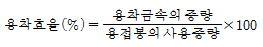
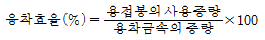
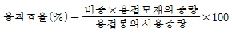
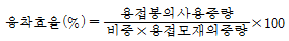
(정답률: 58%)
80. 용접성 시험법 중 용접 균열 시험의 종류가 아닌 것은?
- 피스코 균열 시험
- 샤르피 균열 시험
- 열적 구속도 균열 시험
- 리하이형 구속 균열시험
(정답률: 28%)
5과목: 용접일반 및 안전관리
81. AW-300 용접기를 사용하여 용접을 할 때 용접입열량은 18000J/cm, 아크전압 30V, 무부하전압 90V, 용접속도 15cm/min 이었다면 이 때의 용접 전류 값은 얼마인가?
- 100A
- 150A
- 200A
- 220A
(정답률: 68%)
82. 화재의 종ㅇ류 중 종이, 목재, 석탄 등이 연소 후에 재를 남기는 일반화재를 나타내는 것은?
- A급 화재
- B급 화재
- C급 화재
- D급 화재
(정답률: 73%)
83. 침몰선의 해체나 교량의 개조, 항만의 방파제 공사 등에 사용되며 주로 수소가스를 사용하는 절단은?
- 용제 절단
- 수중 절단
- 탄소아크 절단
- 아크에어 가우징
(정답률: 69%)
84. 용접기의 무부하 전압을 20~30V 이하로 유지하여 용접사를 감전으로부터 보호하는 장치는?
- 핫 스타트 장치
- 전격 방지 장치
- 원격 제어 장치
- 고주파 발생 장치
(정답률: 77%)
85. 피복 아크 용접시 용접전류 200a, 무부하 전압 80V, 아크전압 35V를 사용했다면 용접기의 역률은 얼마인가? (단, 내부손실은 5kW이다.)
- 55%
- 65%
- 75%
- 85%
(정답률: 45%)
86. 용접물을 겹쳐서 용접 팁과 하부 사이에 끼워놓고 압력을 가하면서 원자가 서로 확산되어 압접하는 방식으로 금속판은 0.01~2mm, 플라스틱은 1~5mm 나 필름의 용접도 가능한 압접법은?
- 마찰 용접
- 냉간 압접
- 레이저 용접
- 초음파 용접
(정답률: 33%)
87. 레일의 접합, 차축, 선박의 프레임 등을 용접하는데 사용되며, 금속산화물이 알루미늄에 의하여 산소를 빼앗기는 반응을 이용한 용접은?
- 테르밋 용접
- 레이저 용접
- 플라스마 아크 용접
- 불활성가스 금속 아크 용접
(정답률: 63%)
88. 일반적인 용접의 단점이 아닌 것은?
- 작업공정이 단축된다.
- 품질검사가 곤란하다.
- 잔류응력이 발생한다.
- 저온취성이 생길 우려가 있다.
(정답률: 52%)
89. 다음 중 일렉트로 가스 아크 용접에 사용되는 보호가스로 가장 적당한 것은?
- 헬륨 가스
- 질소 가스
- 아르곤 가스
- 이산화탄소 가스
(정답률: 42%)
90. 선창이나 교각 등 밀폐된 장소에서 절단작업을 할 때 아세틸렌 가스나 에틸렌 가스를 사용하는 주된 이유는?
- 절단 개시시간이 길기 땜누에
- 불꽃의 속도가 느리기 때문에
- 공기보다 비중이 높기 때문에
- 공기보다 비중이 낮기 때문에
(정답률: 56%)
91. 용해 아세틸렌 취급시 주의사항으로 틀린 것은?
- 용기에 진동이나 충격을 가하지 말아야 한다.
- 용기는 45℃ 이상에서 보관하며 반드시 캡을 씌워야 한다.
- 저장실의 전기 스위치, 전등 등은 방폭 구조여야 한다.
- 아세틸렌 충전구 동결시는 35℃ 이하의 온수로 녹여야 한다.
(정답률: 62%)
92. 용접 결함 중 용접사에 의해 발생하는 결함이 아닌 것은?
- 언더컷
- 용입불량
- 라미네이션
- 크레이터 군열
(정답률: 70%)
93. 피복 아크 용접에서 아크 쏠림의 방지 대책으로 틀린 것은?
- 짧은 아크를 사용한다.
- 접지점을 용접부에서 멀리한다.
- 용접부가 긴 경우 후퇴 용접법으로 한다.
- 용접봉 끝을 아크 쏠림 방향으로 기울인다.
(정답률: 58%)
94. 스터드 용접에 이용되는 페롤의 역할로 틀린 것은?
- 용착부의 오염을 방지한다.
- 용융금속의 산화를 방지한다.
- 용융금속의 유출을 원활하게 한다.
- 용접이 진행되는 동안 아크열을 집중시켜준다.
(정답률: 55%)
95. 넌가스 아크 용접(Non gas arc welding)시 일반적인 와이어의 돌출길이로 가장 적당한 것은?
- 약 40~50mm 정도
- 약 70~80mm 정도
- 약 90~100mm 정도
- 약 110~120mm 정도
(정답률: 58%)
96. 다음 가스용접용 연료가스 중 산소와 화합할 때 불꽃 온도가 가장 높은 것은?
- H2
- CH4
- C2H2
- C3H3
(정답률: 58%)
97. 일반적인 용접기의 구비조건으로 틀린 것은?
- 아크가 안정되어야 한다.
- 구조 및 취급이 간단해야 한다.
- 사용 유지비가 적게 들어야 한다.
- 사용 중에 온도 상승이 커야 한다.
(정답률: 71%)
98. 다음 중 용접기호와 자세가 바르게 연결된 것은?
- H : 수직 자세
- O : 수평 자세
- V : 위보기 자세
- F : 아래보기 자세
(정답률: 75%)
99. 가스용접에서 팁 끝이 순간적으로 막히면 가스의 분출이 나빠지고 토치의 가스 혼합실까지 불꽃이 그대로 도달되어 토치가 빨갛게 달구어지는 현상을 무엇이라 하는가?
- 인화
- 역화
- 진화
- 역류
(정답률: 35%)
100. 원판상의 롤러 전극 사이에 용접할 2장의 판을 두고 가압 통전하여 전극을 회전시키면서 연속적으로 점 용접을 반복하는 용접은?
- 심 용접
- 업셋 용접
- 퍼커션용접
- 프로젝션 용접
(정답률: 39%)